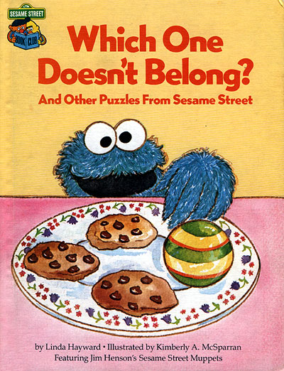
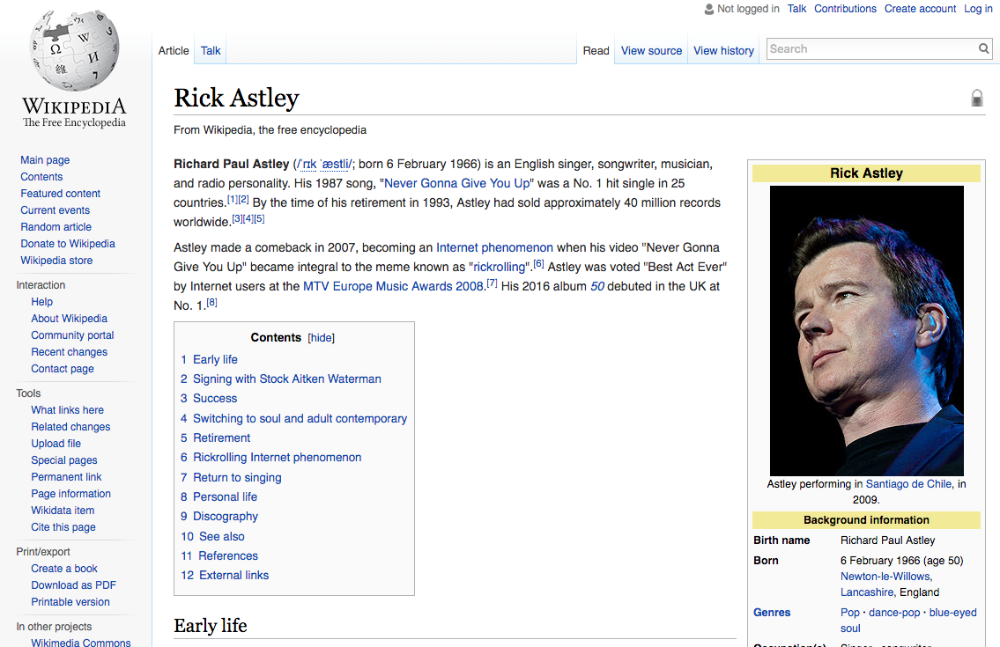
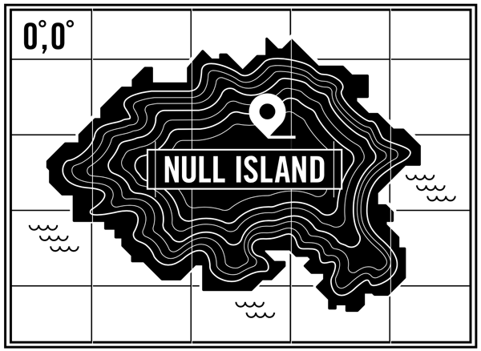
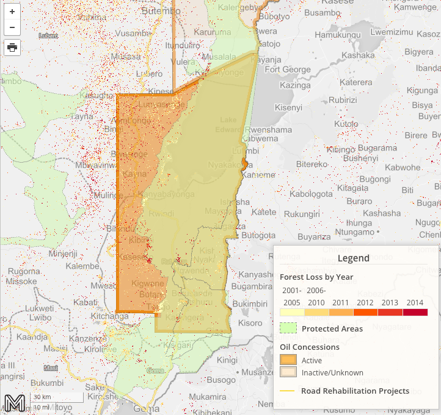
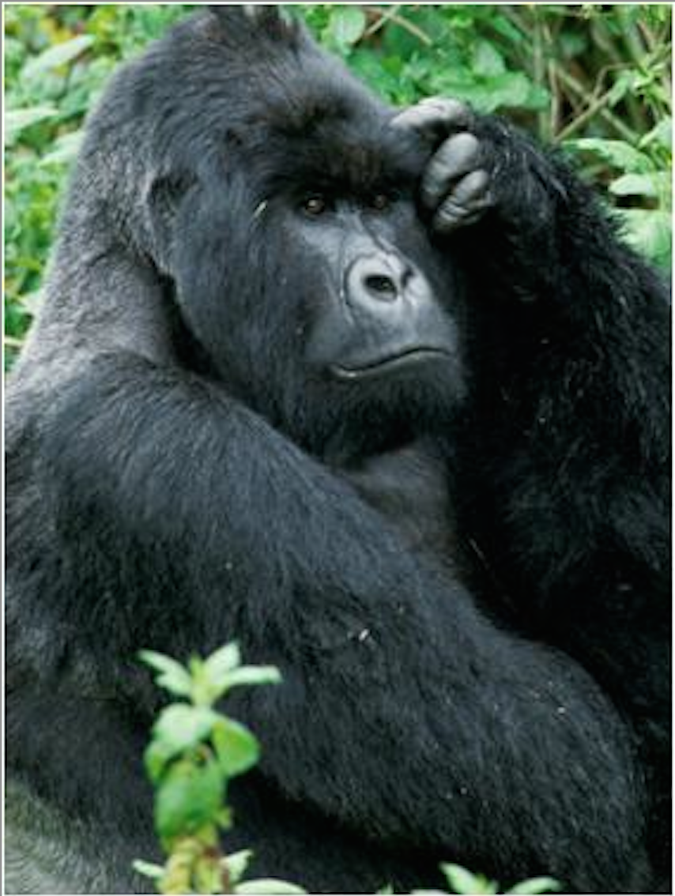

What if it doesn't belong in OpenStreetMap?
Kristofor Carle
Lead Developer - MapHubs
State of the Map US - Seattle, WA
July 24, 2016
kris@maphubs.com
Outline
- OSM = Wikipedia for Maps
- What Doesn't Belong
- Moabi & MapHubs
- OSM software as a toolset
- Demo
- What's Next
About Us
Leo Bottrill
Founder and CEO
Kristofor Carle
Co-Founder and Lead Developer
What if it doesn't belong?
OpenStreetMap = Wikipedia for Maps?
- Requires a consensus with a preference for experts (Local Knowledge)
- Anyone can edit (Community Driven)
- Data must be releasable under the open license (Open Data)
What doesn't belong in Wikipedia?
My 200 page manifesto on why Rick Astley is the best musician of all time*
*Sorry, doesn't really exist.
What doesn't belong in OSM?
Graphic by Ian Cairns on GitHub 2013.
What else doesn't belong in OSM?
- Pokémon GO - PokéStops
- My favorite places with free wifi
- All the land I own
*Not a complete list
Moabi
Moabi builds technology and partnerships to collaboratively monitor the world’s natural resources

Moabi: Clone of OSM Tools
- Easy to edit, flexible data structure
- Easy for users already familiar with OSM to participate
- Allowed us to make customizations
Moabi: Map of Oil Exploration in Virunga National Park, DRC
 Problems
- Moabi system only on focused on DRC
- Difficult to import large datasets
- No controls or permission structure
MapHubs
MapHubs is a home for the world's open map data and an easy tool for making and sharing maps

MapHubs
- Import: Upload map layers (can also link to external services)
- Manage: Control and edit map layers in groups
- Publish: Quickly make a map with data in the system. Write map stories, or create a map hub, mini-site within MapHubs.
MapHubs - Tech
- OSM database and API in NodeJS - Macrocosm
- iD Editor
- Mapbox GL
- Mapbox - base maps
- Mapzen vector tiles - OSM overlay layers
MapHubs is 100% open-source https://github.com/maphubs/maphubs
DEMO
maphubs.comConclusion
We covered:
- What doesn't belong
- MapHubs
- Example of What is possible when we bring OSM and GIS worlds together
What's Next
- Map for Environment mapforenvironment.org
- We are building premium MapHubs features
- We offer services to help you get started